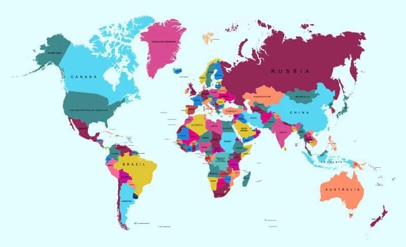

-
Deficiencia auditiva
-
Deficiencia Visual
Mapa de acessibilidade


Deficiencia auditiva
Deficiencia Visual

O Enlace Digital foi desenvolvido pensando em pessoas com deficiência (PCD) e suas famílias, principalmente nas etapas iniciais da escola onde enfrentam dificuldades para encontrar ambientes com acessibilidade específica para suas necessidades. No Enlace Digital o familiar responsável poderá consultar informações sobre escolas e suas adequações para diferentes tipos de deficiência, seja visual, auditiva ou de mobilidade, além de visualizar a localização e avaliações das escolas. Dessa forma, o projeto busca centralizar essas informações e facilitar a busca por uma escola que atenda às necessidades específicas de cada pessoa.